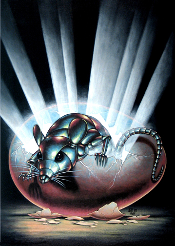

James Bolivar diGriz, alias "Slippery Jim" and "The Stainless Steel Rat", is a fictional character and a series of comic science fiction novels written by Harry Harrison.
James Bolivar diGriz goes by many aliases, including "Slippery Jim" and "The Stainless Steel Rat". He is a futuristic con man, thief, and all-round rascal. He is charming and quick-witted. He is also a master of disguise and martial arts, an accomplished bank robber, a criminal mastermind, an expert on breaking and entering, and (perhaps most usefully) a skilled liar. Master of self-rationalization, the Rat frequently justifies his crimes by arguing that he is providing society with entertainment; and besides which, he only steals from institutions that he believes have insurance coverage and so will be able to recoup their losses. He displays a strong sense of morality, albeit in a much more restricted sense than is traditional. For example, diGriz will steal without compunction, but deplores killing.
The character was introduced in Harrison's short story "The Stainless Steel Rat", first published in 1957 in Astounding magazine. The story introduces the Rat, who has just carried out a successful larceny operation, and subsequently details a complex bank robbery the Rat pulls off with ease; however, he is outfoxed by the mysterious "Special Corps" — a crime-fighting organization staffed with former criminals — and recruited by them in order to fight crime. Harrison used the story, with minor modifications, as the introduction to the series's first full-length novel, also called The Stainless Steel Rat. Like other characters created by Harrison, the Rat is a speaker of Esperanto and advocates atheism.